Verilog语法入门
Verilog HDL是一种硬件描述语言（HDL:Hardware Description Language），以文本形式来描述数字系统硬件的结构和行为的语言，用它可以表示逻辑电路图、逻辑表达式，还可以表示数字逻辑系统所完成的逻辑功能。 Verilog HDL和VHDL是世界上最流行的两种硬件描述语言，都是在20世纪80年代中期开发出来的。前者由Gateway Design Automation公司（该公司于1989年被Cadence公司收购）开发。两种HDL均为IEEE标准。
Verilog可以从五个层次对电路（系统）进行描述，包括:系统级、算法级、寄存器传输级（即RTL级）、门级、开关级。我们平时用的最多的为RTL级，故Verilog代码也经常被称为RTL代码。
在笔者看来，掌握一门语言最快速的方法就是在实际应用中去学习，Verilog HDL也不例外。下面我们就通过一系列实例来学习Verilog HDL。
1.1 简单组合逻辑电路
对于逻辑表达式：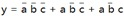
其电路图如下所示：
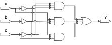
Verilog代码如下：
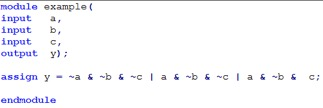
语法说明
module/endmodule:表征模块的开始与结束。
example：模块名可由用户指定，可包含字母、数字及下划线，需以字母开头，区分大小写
assign:赋值操作关键字，该关键字后可跟一个赋值表达式，该关键字是实现组合逻辑操作的一种主要描述方式。
input/output:表征该信号的方向，除输入、输出外还有一种inout（输入输出）型。
操作符：~按位取反、&按位与、|按位或
常用操作符及其优先级：
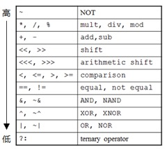
建议大家在写代码时，在适当的地方加上括号，以增加可读性
综合后电路：
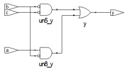
上图是综合工具生成的电路图，大家可以自行化简上述电路，看是否等价。
1.2 多bit逻辑门
对于下面5个逻辑表达式
y1 = a & b;
y2 = a | b;
y3 = a ^ b;
y4 = ~(a & b);
y5 = ~(a | b);
其电路图如下所示：
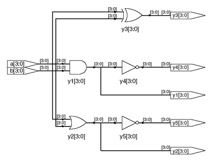
verilog代码为：
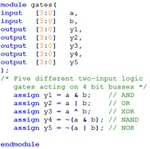
语法说明:
[3:0]:表征该信号的位宽，实例中是推荐写法，[0:3]、[4:1]等写法也是合法的
//、/* */:代码注释，增加代码可读性，//为单行注释，/* */为多行注释
1.3 八输入与门
对于逻辑表达式 y = a[7] & a[6] & a[5] & a[4] & a[3] & a[2] & a[1] & a[0]；
其电路图为：
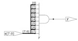
Verilog代码：
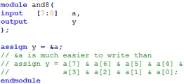
语法说明：
a[7]：可将一个多位宽信号中的一位或多位以此种方式进行单独处理
&：按位与、归并与操作，如该操作符只有一个操作数时，则将该操作数的所有位进行相与操作，可以实现与注释部分相同的功能，但写法更简洁。
1.4 一位全加器
对于表达式 {cout，s} = a + b + cin;
其电路图为：
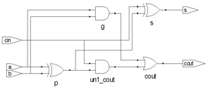
Verilog代码
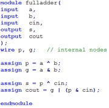
语法说明
wire：线网型数据类型，verilog语法中的一种主要数据类型，用于表示线网型信号，与实际电路中的信号连线相对应。wire是verilog中的默认数据类型，此例中的输入输出信号没有指定数据类型，则默认为wire型。除wire外，另外一种主要数据类型为reg，表示寄存器类型数据。
内部信号：此例中的p、g为内部信号，可以简化设计，增加代码可读性。
1.5 三态门
电路图

Verilog代码

语法说明：
z：高阻态，verilog中，信号共有4种状态“0、1、x、z”，分别表示低电平、高电平、不确定态和高阻态。对于没有进行初始化的信号，一般处于不确定态（x），高阻态表示该信号没有被其他信号驱动，经常用于有多个驱动源的总线型数据上。
4’bz:数据格式，表示该信号为4bit位宽，用二进制方式表示，对于数据格式的进一步说明，可见下表
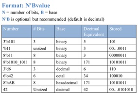
1.6 八位两路选择器
电路图：
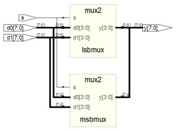
Verilog代码：
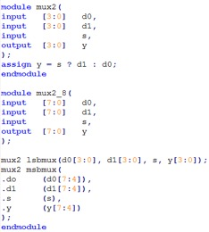
语法说明：
模块例化：可通过实例化已经设计好的模块来达到重用模块，简化设计的目的。可将一个模块重用多次，在同一模块中，实例化名称（本例中为lsbmux、msbmux）可任意指定，但不能相同，也不能使用verilog中的关键字。本例中列举了verilog语法支持的两种实例化方式，推荐使用第二种方式，虽然代码量增加了一些，但增加了可读性，同时降低了出错的风险。
对于第一种模块例化方法，应严格保证实例化模块（lsbmux）中的参数排列顺序与被实例化模块（mux2）的参数排列顺序严格一致。
对于第二种方式点后面是被例化模块（mux2）的接口信号，括号内的是实例化模块（msbmux）的接口信号。
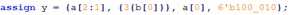
位拼接：可将一个或多个信号的指定位，拼接成一个新的信号，对于上述表达式，如果y是一12bit的信号，则其各位的值为：a[2] a[1] b[0] b[0] b[0] a[0] 1 0 0 0 1 0
下划线：数字中间的下划线是为了增加程序可读性，可直接将其忽略。
1.7 D触发器
电路图：
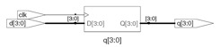
Verilog代码：
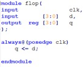
语法说明：
时序逻辑：电路具有记忆功能，电路状态不但与当前输入有关，还与前一时刻的状态有关。
同步逻辑：在同一的时钟信号激励下工作，输出只在时钟的上升沿（或者下降沿）发生变化。
reg：除wire类型外，另外一种常用的数据类型，一般表示寄存器类型数据，不过并不绝对，记住一条原则：在always块内被赋值的信号应定义成reg型，用assign语句赋值的信号应定义成wire型。
always：除assign外，另外一种实现赋值操作的关键字，两者都不可嵌套，区别在于，assign语句只能实现组合逻辑赋值，且一个assign语句后面只能跟一条赋值表达式。而always即能实现组合逻辑赋值，又能实现时序逻辑赋值操作，且可以包含多条赋值表达式，多条赋值表达式，则应位于begin/end对中间。
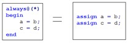
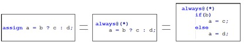
posedge：verilog关键字，表示上升沿的意思。Always@(posedge clk)表示在clk信号的上升沿的时刻，执行always块内部的语句，与此相对应的，是表示下降沿的关键字negedge。凡是带有posedge或negedge的always块，都会被综合成时序逻辑电路。
阻塞/非阻塞赋值：采用“<=”进行赋值的语句，称为“非阻塞赋值”，采用“=”进行赋值的语句，称为“阻塞赋值”。在always块中，阻塞式赋值方式语句执行有先后顺序，而非阻塞赋值语句则是同时执行。因此，在时序逻辑电路中，两种赋值方式可能或综合出不同的电路结构。如下所示
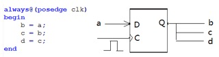
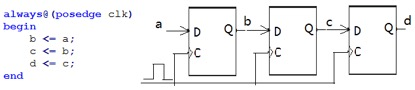
显然，第二种电路才是符合我们预期的设计，为避免出现一些稀奇古怪的电路，我们只需记住以下规则：
i：在组合逻辑电路中，使用阻塞式赋值方式“=”；
ii: 在时序逻辑电路中，使用非阻塞式赋值方式“<=”
iii：在同一个always块内，只能存在一种赋值方式。
iv：一个信号，只能在一个always或一个assign语句下赋值。
v：原则上来说，一个always块内只处理一个或一类信号，不同的信号可在不同的always块内处理。
vi: always块内只能对reg型信号进行处理，不能对wire型数据赋值，也不能实例化模块
1.8 带同步复位的D触发器
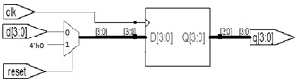
Verilog代码
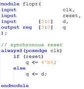
语法说明：
同步复位：复位只能发生在在clk信号的上升沿，若clk信号出现问题，则无法进行复位。
If/else:always块中常用的条件判断语句，可以嵌套，有优先级，一般来说，应将复位处理逻辑放在第一个if语句下，使其具有最高的优先级，该语句只能在always块内使用。另外一种比较常用的条件判断语句是case。与if/else语句不同，case语句不带优先级
1.9 异步复位电路
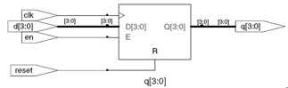
Verilog代码
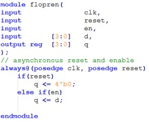
语法说明：
异步复位：在always的敏感变量列表中，包含了posedge clk（clk信号上升沿） 和posedge reset（reset信号下降沿）两个条件，只要有一个条件发生，便会执行always块内的逻辑。复位处理逻辑应具有最高的优先级。
用always块实现组合逻辑
verilog代码
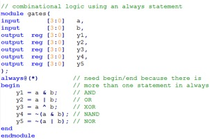
语法说明：
always块内被赋值的信号应定义成reg类型，即使此信号在实际电路中是线型。
always语句实现组合逻辑应采用阻塞赋值方式。
1.10 七段数码管
电路图
我们最常用的是七段式和八段式LED数码管，八段比七段多了一个小数点，其他的基本相同。所谓的八段就是指数码管里有八个小LED发光二极管，通过控制不同的LED的亮灭来显示出不同的字形。数码管又分为共阴极和共阳极两种类型，其实共阴极就是将八个LED的阴极连在一起，让其接地，这样给任何一个LED的另一端高电平，它便能点亮。而共阳极就是将八个LED的阳极连在一起。其原理如下图
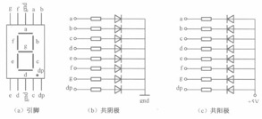
verilog代码
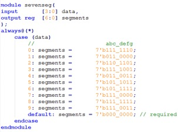
语法说明：
case：case语句的各个条件之间没有优先级，且各条件应是互斥的。在组合逻辑电路中使用case语句最后应加上default语句，以防综合出锁存器电路。
1.11 有限状态机（FSM）
有限状态机（以下简称FSM）在数字电路系统中具有举足轻重的低位，很多控制逻辑都是基于FSM来实现的。FSM在设计实现上，可以分成一段式、两段式、三段式三种。由于三段式具有条理清晰、可读性强，因此多数采用此种设计方式，下面是其电路简图。
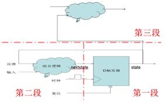
我们以设计具有3个状态的简单状态机为例来进行讲解。
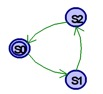
verilog代码：
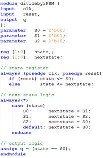
其中，第一个always为FSM的第一段；第二个always块为FSM的第二段；最后的assign语句为FSM的第三段。如有多个信号，可继续使用assign或always语句进行处理。
1.12 参数传递
在例化模块时，可以通过参数传递的方式改变被例化模块的部分参数
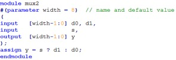
如要例化一8bit位宽的选择器，则使用默认参数即可，不需进行参数传递
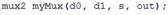
如要例化一12bit位宽的选择器，则可使用如下方式，将参数传递过去

1.14 测试文件
要测试我们设计的模块功能是否正常，最直接的办法就是烧写到FPGA芯片中进行验证，但是这种方式往往结果并不直观，且出现问题后也不容易定位。为提高工作效率，我们可通过电脑仿真的方式进行功能验证，待仿真通过后，再烧写到FPGA中，这样可以快速排除电路中存在的绝大多数bug。在电脑上进行仿真，除了我们设计的功能模块之外，还需要另一模块——testbench，用于产生被测模块所需的激励信号。由于testbench只是用于电脑端的仿真，而不需要最终综合成电路，因此其写法更加灵活，可以使用verilog语法中的一些不可综合的语句，如initial、#、$display、$readmemb、forever等。
假设我们的被测模块完成以下功能
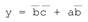
其verilog代码为：
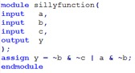
1.14.1 简单测试文件
最简单的测试文件可以写成如下形式：
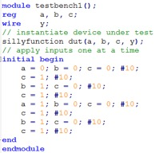
语法说明：
testbench文件一般不包含任何输入输出信号
将被测模块实例化，被测模块的输入信号定义成reg类型，输出信号定义成wire类型。
initial：通过initial块构造输入信号的波形，同一initial块内部的语句是串行执行的，多个initial块之间并发执行。
1.14.2 自检测试文件
带自检功能的测试文件如下所示，可以对输出结果进行判断，并打印错误信息
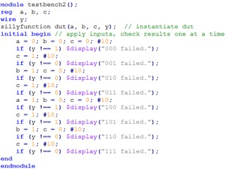
模块的输入信号给定之后，就有有结果输出，将实际输出结果于预期结果做比较，如果不同，则打印出错误信息。
1.14.3 测试向量
通过测试向量进行仿真
将输入信号的各种组合以及对应的输出结果构成一测试向量，则每个向量中都包含了一种输入状态，以及该状态下的期望输出结果
将该向量导入一内存数组
构造一时钟信号
在时钟的上升沿，将一个向量赋值给被测模块输入端，并在时钟的下降沿对被测模块输出与期望输出结果进行对比，如果不相同，则记录下该向量，至此向量全部测试完毕。
向量测试文件（example.tv）:包含a、b、c以及y_expected
000_1
001_0
010_0
011_0
100_1
101_1
110_0
111_0
测试文件
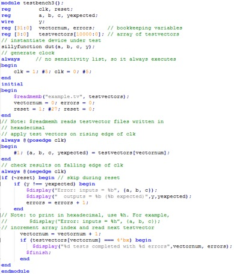
前面介绍了三种测试方法，三种方法各有其优缺点。
简单测试文件编写简单，容易上手，但需要人工判断仿真结果的正确性；
带自检的测试文件可以将错误信息打印出来，但编写稍微复杂一些，且激励波形仍需通过人工输入代码来完成；
测试向量法测试文件编写最为复杂，还需要编写一个用于跟被测模块结果进行比较的黄金模型，但此种方法测试最为充分，且后续维护起来也最容易。